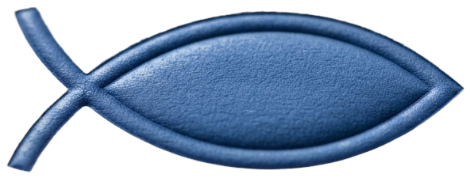

Keeps your notes, journal, and settings — refreshes the app's code immediately, no confirmation needed. (This can't make your phone re-fetch the Home Screen icon image itself — that's only ever captured once, when you first add the shortcut.)
Keeps your data too, by default — you'll be asked separately if you also want it deleted.
Choose one version to read.